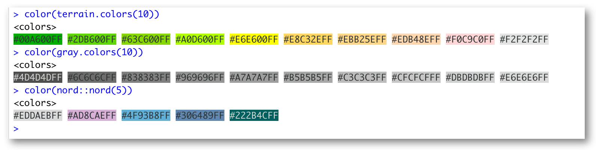

I’m happy to announce my newest package prismatic which facilitates simple manipulations of colors. I had been working on this package online and offline for some time, but the promise of easy manipulation of mapped data in ggplot2 forced me to get some work done to get this package out before ggplot2 version 3.3.0. (as of time of writing.)
This post will go over some of the finer details with lots of pretty pictures!
Loading Packages
The prismatic package is fairly low dependency with only 1 import being farver for lightning fast conversion between color spaces. I have also loaded the colorspace package, from which some of the following functions have been inspired. I will use colorspace to enable plotting of multiple color palettes side by side, but I will not showcase the code each time. Go to the end of the post for example code for comparison plots.
library(prismatic)
library(colorspace) # for plotting functions
library(magrittr) # for the glorious pipe
Let me see the colors!!
If you have seen my work, you will properly know that I like colors alot! But being also to quickly inspect some colors have always been a little too much work. Now all you have to do it pass your colors to color() (or colour() for our friends across the pond) to get a object which has a nice plot() method
rainbow(10) %>% color() %>% plot()

hcl.colors(25) %>% color() %>% plot()

scico::scico(256, palette = "buda") %>% color() %>% plot()

Which I would like to think is one of the main features of the package. If you happens to have crayon available you will see a approximation of the colors with a filled in background (this limited to 256 colors so you milage might very, when in doubt use plot())

This is the extent of what the color object can do.
Manipulations
The second star of the package is the collection of functions to manipulate the colors. All these functions have a couple of things in common.
- They all start with
clr_ for easy auto completion in your favorite IDE.
- They all take a vector of colors as the first argument and results a colors object of the same length.
these two facts make the function super pipe friendly.
Saturation
The two functions clr_saturate() and clr_desaturate() both modifies the saturation of a color. It takes a single additional argument to specifying the degree of which the (de)saturation should occur. These values should be between 0(nothing happens) and 1(full on power!).
notice how you don’t have to call color() on the output of clr_desaturate() as it already returns a colors object.
hcl.colors(10, "plasma") %>%
clr_desaturate(0.8) %>%
plot()


Example done with Mango palette from LaCroixColoR package.

Seeing life in black and white
Turns out there is a lot of different ways to turn colors into grayscale. Prismatic has implemented a handful of these. Notice how the viridis palette is still working once you have it transformed to black and white.
hcl.colors(10) %>%
clr_greyscale() %>%
plot()

Be advised that not all of these methods are meant to be perceptually uniform.

Negate
Negation of a color is pretty simple. it will just pick the opposite color in RGB space.
terrain.colors(10) %>%
clr_negate() %>%
plot()


Mixing
Mixing is just adding colors together. Thus my mixing a color with red would make a color more red.
rainbow(10) %>%
clr_mix("red") %>%
plot()


Rotation
the clr_rotate() function will take a color and rotate its hue, which is a way walk around the rainbow.
terrain.colors(10) %>%
clr_rotate(90) %>%
plot()


Color blindness
also includes 3 functions (clr_protan(), clr_deutan() and clr_tritan()) to simulate colorblindness. These functions has a severity argument to control the strength of the deficiency.
hcl.colors(10) %>%
clr_deutan() %>%
plot()


Light and darkness
Lastly we have functions to simulate lightness and darkness. This is surprisingly hard to do and no one way works great all the time. Please refer to the excellent colorspace paper for more information. These functions (clr_lighten() and clr_darken()) also include a space argument to determine the space in which to perform the transformation. Please try each of these to find the optimal method for your use case.
rainbow(10) %>%
clr_darken() %>%
plot()


Comparison Code
swatchplot(
list(
saturate = rbind("0" = clr_rotate(terrain.colors(10), 0),
"60" = clr_rotate(terrain.colors(10), 60),
"120" = clr_rotate(terrain.colors(10), 120),
"180" = clr_rotate(terrain.colors(10), 180),
"240" = clr_rotate(terrain.colors(10), 240),
"300" = clr_rotate(terrain.colors(10), 300)),
desaturate = rbind("0" = clr_rotate(hcl.colors(10), 0),
"60" = clr_rotate(hcl.colors(10), 60),
"120" = clr_rotate(hcl.colors(10), 120),
"180" = clr_rotate(hcl.colors(10), 180),
"240" = clr_rotate(hcl.colors(10), 240),
"300" = clr_rotate(hcl.colors(10), 300))
),
nrow = 7, line = 2.5
)
session information
─ Session info ───────────────────────────────────────────────────────────────
setting value
version R version 3.6.0 (2019-04-26)
os macOS Mojave 10.14.6
system x86_64, darwin15.6.0
ui X11
language (EN)
collate en_US.UTF-8
ctype en_US.UTF-8
tz America/Los_Angeles
date 2020-04-23
─ Packages ───────────────────────────────────────────────────────────────────
! package * version date lib source
P assertthat 0.2.1 2019-03-21 [?] CRAN (R 3.6.0)
P backports 1.1.6 2020-04-05 [?] CRAN (R 3.6.0)
P blogdown 0.18 2020-03-04 [?] CRAN (R 3.6.0)
P bookdown 0.18 2020-03-05 [?] CRAN (R 3.6.0)
P cli 2.0.2 2020-02-28 [?] CRAN (R 3.6.0)
P clipr 0.7.0 2019-07-23 [?] CRAN (R 3.6.0)
P colorspace * 1.4-1 2019-03-18 [?] CRAN (R 3.6.0)
P crayon 1.3.4 2017-09-16 [?] CRAN (R 3.6.0)
P desc 1.2.0 2018-05-01 [?] CRAN (R 3.6.0)
P details * 0.2.1 2020-01-12 [?] CRAN (R 3.6.0)
P digest 0.6.25 2020-02-23 [?] CRAN (R 3.6.0)
P evaluate 0.14 2019-05-28 [?] CRAN (R 3.6.0)
P fansi 0.4.1 2020-01-08 [?] CRAN (R 3.6.0)
P farver 2.0.3 2020-01-16 [?] CRAN (R 3.6.0)
P glue 1.4.0 2020-04-03 [?] CRAN (R 3.6.0)
P htmltools 0.4.0 2019-10-04 [?] CRAN (R 3.6.0)
P httr 1.4.1 2019-08-05 [?] CRAN (R 3.6.0)
P knitr * 1.28 2020-02-06 [?] CRAN (R 3.6.0)
P magrittr * 1.5 2014-11-22 [?] CRAN (R 3.6.0)
P png 0.1-7 2013-12-03 [?] CRAN (R 3.6.0)
P prismatic * 0.2.0.9000 2020-03-15 [?] local
P R6 2.4.1 2019-11-12 [?] CRAN (R 3.6.0)
P Rcpp 1.0.4.6 2020-04-09 [?] CRAN (R 3.6.0)
renv 0.9.3 2020-02-10 [1] CRAN (R 3.6.0)
P rlang 0.4.5 2020-03-01 [?] CRAN (R 3.6.0)
P rmarkdown 2.1 2020-01-20 [?] CRAN (R 3.6.0)
P rprojroot 1.3-2 2018-01-03 [?] CRAN (R 3.6.0)
P sessioninfo 1.1.1 2018-11-05 [?] CRAN (R 3.6.0)
P stringi 1.4.6 2020-02-17 [?] CRAN (R 3.6.0)
P stringr 1.4.0 2019-02-10 [?] CRAN (R 3.6.0)
P withr 2.1.2 2018-03-15 [?] CRAN (R 3.6.0)
P xfun 0.13 2020-04-13 [?] CRAN (R 3.6.2)
P xml2 1.3.0 2020-04-01 [?] CRAN (R 3.6.2)
P yaml 2.2.1 2020-02-01 [?] CRAN (R 3.6.0)
[1] /Users/emilhvitfeldthansen/Desktop/blogv4/renv/library/R-3.6/x86_64-apple-darwin15.6.0
[2] /private/var/folders/m0/zmxymdmd7ps0q_tbhx0d_26w0000gn/T/RtmpsAcV6m/renv-system-library
P ── Loaded and on-disk path mismatch.